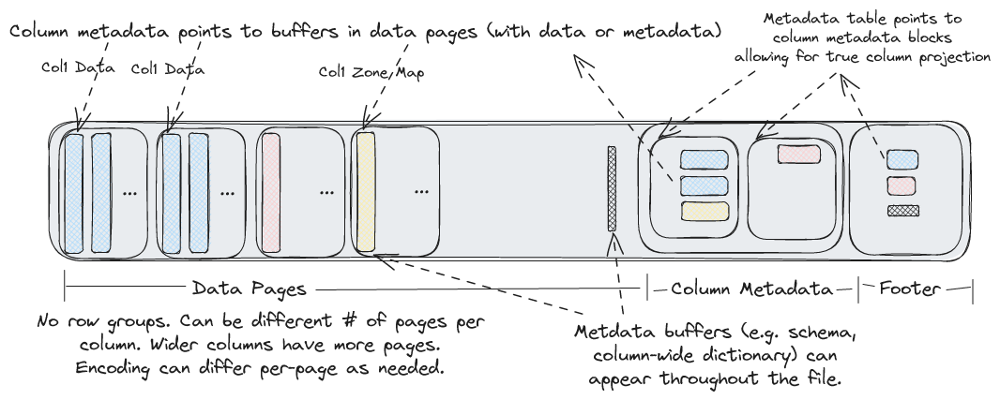

Lance Formats¶
The Lance format is both a table format and a file format. Lance typically refers to tables as \"datasets\". A Lance dataset is designed to efficiently handle secondary indices, fast ingestion and modification of data, and a rich set of schema evolution features.
Dataset Directory¶
A [Lance Dataset]{.title-ref} is organized in a directory.
/path/to/dataset:
data/*.lance -- Data directory
_versions/*.manifest -- Manifest file for each dataset version.
_indices/{UUID-*}/index.idx -- Secondary index, each index per directory.
_deletions/*.{arrow,bin} -- Deletion files, which contain ids of rows
that have been deleted.
A Manifest file includes the metadata to describe a version of the
dataset.
See the table.proto file for the complete Manifest definition.
Fragments¶
DataFragment represents a chunk of data in the dataset. Itself
includes one or more DataFile, where each DataFile can contain
several columns in the chunk of data. It also may include a
DeletionFile, which is explained in a later section.
See the table.proto file for the complete DataFragment and DataFile definitions.
The overall structure of a fragment is shown below. One or more data files store the columns of a fragment. New columns can be added to a fragment by adding new data files. The deletion file (if present), stores the rows that have been deleted from the fragment.

Every row has a unique id, which is an u64 that is composed of two u32s: the fragment id and the local row id. The local row id is just the index of the row in the data files.
File Structure¶
Each .lance file is the container for the actual data.

At the tail of the file, [ColumnMetadata]{.title-ref} protobuf blocks are used to describe the encoding of the columns in the file.
See the file2.proto file for the complete metadata definitions.
A Footer describes the overall layout of the file. The entire file
layout is described here:
See the file2.proto file for the complete file layout definitions.
File Version¶
The Lance file format has gone through a number of changes including a breaking change from version 1 to version 2. There are a number of APIs that allow the file version to be specified. Using a newer version of the file format will lead to better compression and/or performance. However, older software versions may not be able to read newer files.
In addition, the latest version of the file format (next) is unstable
and should not be used for production use cases. Breaking changes could
be made to unstable encodings and that would mean that files written
with these encodings are no longer readable by any newer versions of
Lance. The next version should only be used for experimentation and
benchmarking upcoming features.
The following values are supported:
Version Minimal Lance Maximum Lance Description Version Version
0.1 Any Any This is the initial Lance format.
2.0 0.16.0 Any Rework of the Lance file format that removed row groups and introduced null support for lists, fixed size lists, and primitives
2.1 (unstable) None Any Enhances integer and string compression, adds support for nulls in struct fields, and improves random access performance with nested fields.
legacy N/A N/A Alias for 0.1
stable N/A N/A Alias for the latest stable version (currently 2.0)
next N/A N/A Alias for the latest unstable version (currently 2.1)
- File Versions
File Encodings¶
Lance supports a variety of encodings for different data types. The encodings are chosen to give both random access and scan performance. Encodings are added over time and may be extended in the future. The manifest records a max format version which controls which encodings will be used. This allows for a gradual migration to a new data format so that old readers can still read new data while a migration is in progress.
Encodings are divided into \"field encodings\" and \"array encodings\".
Field encodings are consistent across an entire field of data, while
array encodings are used for individual pages of data within a field.
Array encodings can nest other array encodings (e.g. a dictionary
encoding can bitpack the indices) however array encodings cannot nest
field encodings. For this reason data types such as
Dictionary<UInt8, List<String>> are not yet supported (since there is
no dictionary field encoding)
Encoding Encoding What it does Supported When it is Name Type Versions applied
Basic struct Field Encodes non-nullable struct >= 2.0 Default encoding encoding data for structs
List Field Encodes lists (nullable or >= 2.0 Default encoding encoding non-nullable) for lists
Basic Field Encodes primitive data types >= 2.0 Default encoding Primitive encoding using separate validity for primitive array data types
Value Array Encodes a single vector of >= 2.0 Fallback encoding fixed-width values encoding for fixed-width types
Binary Array Encodes a single vector of >= 2.0 Fallback encoding variable-width data encoding for variable-width types
Dictionary Array Encodes data using a >= 2.0 Used on string encoding dictionary array and an pages with fewer indices array which is than 100 unique useful for large data types elements with few unique values
Packed Array Encodes a struct with >= 2.0 Only used on
struct encoding fixed-width fields in a struct types if
row-major format making the field
random access more efficient metadata
attribute
"packed" is
set to "true"
Fsst Array Compresses binary data by >= 2.1 Used on string encoding identifying common pages that are substrings (of 8 bytes or not dictionary less) and encoding them as encoded symbols
Bitpacking Array Encodes a single vector of >= 2.1 Used on integral
encoding fixed-width values using types
bitpacking which is useful
for integral types that do
not span the full range of
values
- Encodings Available
Feature Flags¶
As the file format and dataset evolve, new feature flags are added to
the format. There are two separate fields for checking for feature
flags, depending on whether you are trying to read or write the table.
Readers should check the reader_feature_flags to see if there are any
flag it is not aware of. Writers should check writer_feature_flags. If
either sees a flag they don\'t know, they should return an
\"unsupported\" error on any read or write operation.
Fields¶
Fields represent the metadata for a column. This includes the name, data type, id, nullability, and encoding.
Fields are listed in depth first order, and can be one of (1) parent (struct), (2) repeated (list/array), or (3) leaf (primitive). For example, the schema:
Would be represented as the following field list:
name id type parent_id logical_type
a 1 LEAF 0 "int32"
b 2 PARENT 0 "struct"
b.c 3 REPEATED 2 "list"
b.c 4 LEAF 3 "int32"
b.d 5 LEAF 2 "int32"
Dataset Update and Schema Evolution¶
Lance supports fast dataset update and schema evolution via
manipulating the Manifest metadata.
Appending is done by appending new Fragment to the dataset. While
adding columns is done by adding new DataFile of the new columns to
each Fragment. Finally, Overwrite a dataset can be done by resetting
the Fragment list of the Manifest.

Deletion¶
Rows can be marked deleted by adding a deletion file next to the data in
the _deletions folder. These files contain the indices of rows that
have between deleted for some fragment. For a given version of the
dataset, each fragment can have up to one deletion file. Fragments that
have no deleted rows have no deletion file.
Readers should filter out row ids contained in these deletion files during a scan or ANN search.
Deletion files come in two flavors:
- Arrow files: which store a column with a flat vector of indices
- Roaring bitmaps: which store the indices as compressed bitmaps.
Roaring Bitmaps are used for larger deletion sets, while Arrow files are used for small ones. This is because Roaring Bitmaps are known to be inefficient for small sets.
The filenames of deletion files are structured like:
Where fragment_id is the fragment the file corresponds to,
read_version is the version of the dataset that it was created off of
(usually one less than the version it was committed to), and random_id
is a random i64 used to avoid collisions. The suffix is determined by
the file type (.arrow for Arrow file, .bin for roaring bitmap).
See the table.proto file for the DeletionFile definition.
Deletes can be materialized by re-writing data files with the deleted rows removed. However, this invalidates row indices and thus the ANN indices, which can be expensive to recompute.
Committing Datasets¶
A new version of a dataset is committed by writing a new manifest file
to the _versions directory.
To prevent concurrent writers from overwriting each other, the commit process must be atomic and consistent for all writers. If two writers try to commit using different mechanisms, they may overwrite each other\'s changes. For any storage system that natively supports atomic rename-if-not-exists or put-if-not-exists, these operations should be used. This is true of local file systems and cloud object stores, with the notable except of AWS S3. For ones that lack this functionality, an external locking mechanism can be configured by the user.
Manifest Naming Schemes¶
Manifest files must use a consistent naming scheme. The names correspond to the versions. That way we can open the right version of the dataset without having to read all the manifests. It also makes it clear which file path is the next one to be written.
There are two naming schemes that can be used:
- V1:
_versions/{version}.manifest. This is the legacy naming scheme. - V2:
_versions/{u64::MAX - version:020}.manifest. This is the new naming scheme. The version is zero-padded (to 20 digits) and subtracted fromu64::MAX. This allows the versions to be sorted in descending order, making it possible to find the latest manifest on object storage using a single list call.
It is an error for there to be a mixture of these two naming schemes.
Conflict resolution¶
If two writers try to commit at the same time, one will succeed and the other will fail. The failed writer should attempt to retry the commit, but only if its changes are compatible with the changes made by the successful writer.
The changes for a given commit are recorded as a transaction file, under
the _transactions prefix in the dataset directory. The transaction
file is a serialized Transaction protobuf message. See the
transaction.proto file for its definition.

The commit process is as follows:
- The writer finishes writing all data files.
- The writer creates a transaction file in the
_transactionsdirectory. This file describes the operations that were performed, which is used for two purposes: (1) to detect conflicts, and (2) to re-build the manifest during retries.- Look for any new commits since the writer started writing. If there are any, read their transaction files and check for conflicts. If there are any conflicts, abort the commit. Otherwise, continue.
- Build a manifest and attempt to commit it to the next version. If the commit fails because another writer has already committed, go back to step 3.
When checking whether two transactions conflict, be conservative. If the transaction file is missing, assume it conflicts. If the transaction file has an unknown operation, assume it conflicts.
External Manifest Store¶
If the backing object store does not support *-if-not-exists operations, an external manifest store can be used to allow concurrent writers. An external manifest store is a KV store that supports put-if-not-exists operation. The external manifest store supplements but does not replace the manifests in object storage. A reader unaware of the external manifest store could read a table that uses it, but it might be up to one version behind the true latest version of the table.

The commit process is as follows:
PUT_OBJECT_STORE mydataset.lance/_versions/{version}.manifest-{uuid}stage a new manifest in object store under a unique path determined by new uuidPUT_EXTERNAL_STORE base_uri, version, mydataset.lance/_versions/{version}.manifest-{uuid}commit the path of the staged manifest to the external store.COPY_OBJECT_STORE mydataset.lance/_versions/{version}.manifest-{uuid} mydataset.lance/_versions/{version}.manifestcopy the staged manifest to the final pathPUT_EXTERNAL_STORE base_uri, version, mydataset.lance/_versions/{version}.manifestupdate the external store to point to the final manifest
Note that the commit is effectively complete after step 2. If the writer fails after step 2, a reader will be able to detect the external store and object store are out-of-sync, and will try to synchronize the two stores. If the reattempt at synchronization fails, the reader will refuse to load. This is to ensure that the dataset is always portable by copying the dataset directory without special tool.

The reader load process is as follows:
GET_EXTERNAL_STORE base_uri, version, paththen, if path does not end in a UUID return the pathCOPY_OBJECT_STORE mydataset.lance/_versions/{version}.manifest-{uuid} mydataset.lance/_versions/{version}.manifestreattempt synchronizationPUT_EXTERNAL_STORE base_uri, version, mydataset.lance/_versions/{version}.manifestupdate the external store to point to the final manifestRETURN mydataset.lance/_versions/{version}.manifestalways return the finalized path, return error if synchronization fails
Statistics¶
Statistics are stored within Lance files. The statistics can be used to determine which pages can be skipped within a query. The null count, lower bound (min), and upper bound (max) are stored.
Statistics themselves are stored in Lance\'s columnar format, which allows for selectively reading only relevant stats columns.
Statistic values¶
Three types of statistics are stored per column: null count, min value, max value. The min and max values are stored as their native data types in arrays.
There are special behaviors for different data types to account for nulls:
For integer-based data types (including signed and unsigned integers, dates, and timestamps), if the min and max are unknown (all values are null), then the minimum/maximum representable values should be used instead.
For float data types, if the min and max are unknown, then use -Inf
and +Inf, respectively. (-Inf and +Inf may also be used for min
and max if those values are present in the arrays.) NaN values should
be ignored for the purpose of min and max statistics. If the max value
is zero (negative or positive), the max value should be recorded as
+0.0. Likewise, if the min value is zero (positive or negative), it
should be recorded as -0.0.
For binary data types, if the min or max are unknown or unrepresentable,
then use null value. Binary data type bounds can also be truncated. For
example, an array containing just the value "abcd" could have a
truncated min of "abc" and max of "abd". If there is no truncated
value greater than the maximum value, then instead use null for the
maximum.
Warning
The min and max values are not guaranteed to be within the array;
they are simply upper and lower bounds. Two common cases where they are
not contained in the array is if the min or max original value was
deleted and when binary data is truncated. Therefore, statistic should
not be used to compute queries such as SELECT max(col) FROM table.
Page-level statistics format¶
Page-level statistics are stored as arrays within the Lance file. Each
array contains one page long and is num_pages long. The page offsets
are stored in an array just like the data page table. The offset to the
statistics page table is stored in the metadata.
The schema for the statistics is:
<field_id_1>: struct
null_count: i64
min_value: <field_1_data_type>
max_value: <field_1_data_type>
...
<field_id_N>: struct
null_count: i64
min_value: <field_N_data_type>
max_value: <field_N_data_type>
Any number of fields may be missing, as statistics for some fields or of some kind may be skipped. In addition, readers should expect there may be extra fields that are not in this schema. These should be ignored. Future changes to the format may add additional fields, but these changes will be backwards compatible.
However, writers should not write extra fields that aren\'t described in this document. Until they are defined in the specification, there is no guarantee that readers will be able to safely interpret new forms of statistics.
Feature: Move-Stable Row IDs¶
The row ids features assigns a unique u64 id to each row in the table. This id is stable after being moved (such as during compaction), but is not necessarily stable after a row is updated. (A future feature may make them stable after updates.) To make access fast, a secondary index is created that maps row ids to their locations in the table. The respective parts of these indices are stored in the respective fragment\'s metadata.
- row id
-
A unique auto-incrementing u64 id assigned to each row in the table.
- row address
-
The current location of a row in the table. This is a u64 that can be thought of as a pair of two u32 values: the fragment id and the local row offset. For example, if the row address is (42, 9), then the row is in the 42rd fragment and is the 10th row in that fragment.
- row id sequence
-
The sequence of row ids in a fragment.
- row id index
-
A secondary index that maps row ids to row addresses. This index is constructed by reading all the row id sequences.
Assigning row ids¶
Row ids are assigned in a monotonically increasing sequence. The next
row id is stored in the manifest as the field next_row_id. This starts
at zero. When making a commit, the writer uses that field to assign row
ids to new fragments. If the commit fails, the writer will re-read the
new next_row_id, update the new row ids, and then try again. This is
similar to how the max_fragment_id is used to assign new fragment ids.
When a row id updated, it is typically assigned a new row id rather than reusing the old one. This is because this feature doesn\'t have a mechanism to update secondary indices that may reference the old values for the row id. By deleting the old row id and creating a new one, the secondary indices will avoid referencing stale data.
Row ID sequences¶
The row id values for a fragment are stored in a RowIdSequence
protobuf message. This is described in the
protos/rowids.proto
file. Row id sequences are just arrays of u64 values, which have
representations optimized for the common case where they are sorted and
possibly contiguous. For example, a new fragment will have a row id
sequence that is just a simple range, so it is stored as a start and
end value.
These sequence messages are either stored inline in the fragment metadata, or are written to a separate file and referenced from the fragment metadata. This choice is typically made based on the size of the sequence. If the sequence is small, it is stored inline. If it is large, it is written to a separate file. By keeping the small sequences inline, we can avoid the overhead of additional IO operations.
See the table.proto file for the complete row_id_sequence definition.
Row ID index¶
To ensure fast access to rows by their row id, a secondary index is
created that maps row ids to their locations in the table. This index is
built when a table is loaded, based on the row id sequences in the
fragments. For example, if fragment 42 has a row id sequence of
[0, 63, 10], then the index will have entries for 0 -> (42, 0),
63 -> (42, 1), 10 -> (42, 2). The exact form of this index is left
up to the implementation, but it should be optimized for fast lookups.